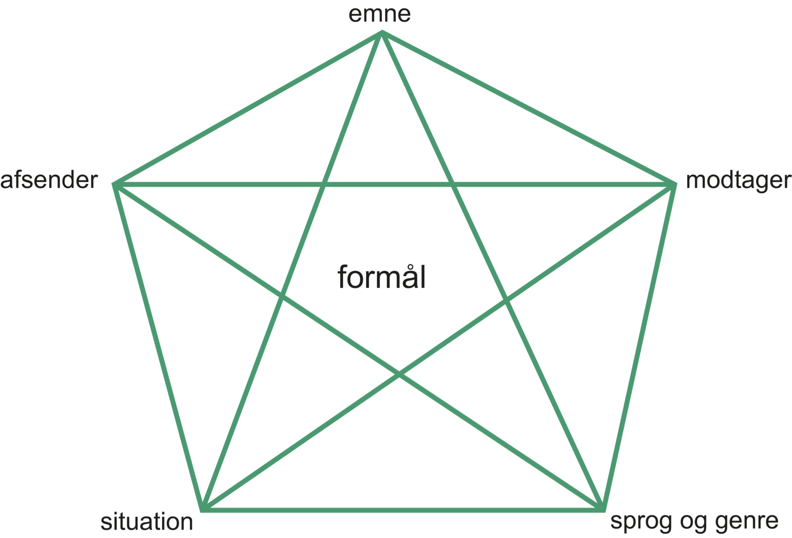

SO står for studieområde. Et studieområde er hvor du skal lære at arbejde på tværs af fag. SO2, altså studieområde 2, er den anden ud af 6 store projekter, som er med til at forberede dig til det endelige syvende projekt, SOP (Studieområdeprojektet), som skal på dit eksamensbevis.
Da Ea igen dibsede mig, valgte vi et emne i fysik, som de eneste fra vores klasse. Emnet var transformator, hvilket høre ind under ellære, da de bliver brugt til at udsende vekselstrøm med høje spændingsforskelle over lange afstande. Dette bliver gjort ved brug af en jernkerne, altså en magnetisk kerne, med to spoler der er vinklet rundt om jernkernen.

I dansk og KIT delen af vores SO2 projekt gik vi igennem forskellige ting, herunder Ciceros pentagram
og Toulmins argumentations model i dansk, og i KIT Spiralmodellen og et rutediagram.
Dansk
Ciceros pentagram er bestående af 5 forskellige faktorer, som hver skal have en betydning for projektet.
Disse faktorer lyder på, situation, modtager, afsender, emne og sprog. Vores skrevne svar til hver af faktorerne
lyder følgende:
Situation: ”Vi har nogle nye 1.g’er der skal lære et naturvidenskabeligt emne,
og vi skal forklare selve emnet på en forståelig måde.”
Modtager: De nye 1.g’er der ikke kender til selve emnet.
Afsender: 2 erfarne 1.g’er der skal formidle et naturvidenskabeligt emne.
Emne: Transformator fra ellære i fysik.
Sprog: Vi skal bruge noget logos. Det skal være informativt, men forståeligt.
Derudover brugte vi Toulmins argumentationsmodel til at analysere det vi allerede selv
havde skrevet, og gav et par eksempler på påstand, belæg og hjemmel.
 KIT
KIT
I KIT gik vi igennem spiralmodellen set på venstre side. Vi kom igennem assess, design
og build mange gange, hvilket er pointen med modellen. Vi gik igennem mange forskellige
ideer som vi begge kom med, og da vi havde sat og fast på et par stykker begyndte vi at
design hvordan hjemmesiden skulle komme til at se ud. Dette blev gjort i Wireframe og på
papir. Derudover da vi var færdige med koden til JavaScript, så lavede vi et lille rutediagram,
så koden også vil være forståelig for andre.
Se hjemmesiden her,
hvor der i øvrigt også kan læses om hvordan det er gået, skrevet i logbogen, og vores
selvrefleksioner.